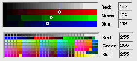

| The Interface Kit Table of Contents | The Interface Kit Index |
Derived from: BControl > BView > BHandler
Declared in: be/interface/ColorControl.h
Library: libbe.so
A BColorControl object displays an on-screen device that permits users to pick a color. It reports the color as its current value—an rgb_color data structure stored as a 32-bit integer. If a model message is provided, it announces each change in value by sending a copy of the message to a designated target.
When the screen is 8 bits deep, the BColorControl object presents users with a matrix of the 256 available colors. The user chooses a color by pressing the primary mouse button while the cursor is over one of the cells in the matrix. Dragging from cell to cell changes the selected color. The arrow keys can similarly change the selection when the object is the focus view. The BColorControl's value changes each time the selection does.

When the screen is 15, 16, or 32 bits deep, the BColorControl object displays ramps for each color component. The user changes the current color by modifying a red, green, or blue component value.
In addition to the color matrix and ramp, a BColorColor has three text fields where the user can set a color by typing in its red, green, and blue component values. The text fields (BTextControl objects) are children of the BColorControl.
|
Initializes the BColorControl so that the left top corner of its frame rectangle will be located at the stated leftTop point in the coordinate system of its parent view. The frame rectangle will be large enough to display 256 color cells arranged in the specified matrix, which can be any of the following color_control_layout constants:
| B_CELLS_4x64 | B_CELLS_8x32 | B_CELLS_16x16 |
| B_CELLS_64x4 | B_CELLS_32x8 |
For example, B_CELLS_4x64 lays out a matrix with four cell columns and 64 rows; B_CELLS_32x8 specifies 32 columns and 8 rows. Each cell is a square cellSide coordinate units on a side; since the number of units translates directly to screen pixels, cellSide should be a whole number.
When the screen is 15, 16, or 32 bits deep, the same frame rectangle will display four color ramps, one each for the red, green, and blue components, plus a disabled ramp for the alpha component. You might choose matrix and cellSize values with a view toward how the resulting bounds rectangle would be divided into four horizontal rows.
The name argument assigns a name to the object as a BHandler. It's the same as the argument declared by the BView constructor.
If a model message is supplied, the BColorControl will announce every change in color value by calling Invoke() (defined in the BControl class) to post a copy of the message to a designated target.
If the bufferedDrawing flag is true, all changes to the on-screen display will first be made in an off-screen bitmap and then copied to the screen. This makes the drawing smoother, but it requires more memory.
The initial value of the new object is 0, which when translated to an rgb_color structure, means black.
See also: BHandler::SetName(), BControl::Invoke()
|
Gets rid of the off-screen bitmap, if one was requested when the object was constructed.
|
Returns a new BColorControl object, allocated by new and created with the version of the constructor that takes a BMessage archive. However, if the archive doesn't contain data for a BColorControl object, this function returns NULL.
See also: BArchivable::Instantiate(), instantiate_object(), Archive()
|
Calls the inherited version of Archive(), then adds the layout, cell size, and whether the object uses buffered drawing to the BMessage archive.
See also: BArchivable::Archive(), Instantiate() static function
|
Augments the BControl version of this function to set the BColorControl's view color and low color to be the same as its parent's view color and to set up the BTextControl objects where the user can type red, green, and blue color values. If the object uses buffered drawing, this function makes sure the offscreen images are displayed on-screen.
See also: BControl::AttachedToWindow(), BView::SetViewColor()
|
Overrides the BView version of this function to draw the color control.
See also: BView::Draw()
|
Calculates how large the color control needs to be given its layout, cell size, and current font; the results are reported in the variables that the width and height arguments refer to.
See also: BView::GetPreferredSize()
|
Augments the BControl version of KeyDown() to allow the user to navigate within the color control using the arrow keys.
See also: BControl::KeyDown()
|
Responds to internal messages that change the color.
See also: BHandler::MessageReceived()
|
Overrides the BView version of MouseDown() to allow the user to operate the color control with the mouse.
See also: BView::MouseDown()
|
These functions set and return the size of a single cell in the BColorControl's matrix of 256 colors. A cell is a square cellSide coordinate units on a side. The size is first set by the BColorControl constructor.
See also: the BColorControl constructor
|
Auguments the BControl version of SetEnabled() to disable and re-enable the text fields for setting the color components as the BColorControl is disabled and re-enabled. The inherited IsEnabled() function doesn't need augmenting and therefore isn't reimplemented.
See also: BControl::SetEnabled()
|
These functions set and return the layout of the matrix of 256 color cells. The matrix is first arranged by the constructor. See the constructor for permissible layout values.
See also: the BColorControl constructor
|
These functions set and return the BColorControl's current value—the last color that the user selected.
The virtual version of SetValue() takes an int32 argument and is essentially the same as the BControl version of the function, which it modifies only to take care of class-internal housekeeping details. The inline version, on the other hand, takes an rgb_color argument and is unique to this class. It packs color information from the structure into a 32-bit integer and passes it to the virtual version of the function. Like all other objects that derive from BControl, a BColorControl stores its current value as an int32; no information is lost in the translation from an rgb_color structure to an integer.
SetValue() is called to make every change to the BControl's value. If you override this function to be notified of the changes, you should override the virtual version. (However, due to the peculiarities of C++, overriding any version of an overloaded function hides all versions of the function. For continued access to the rgb_color version of SetValue() without explicitly specifying the "BColorControl::" prefix, copy the inline code from interface/ColorControl.h to the derived class.)
ValueAsColor() is an alternative to the Value() function inherited from the BControl class. It returns the object's current value as an rgb_color; Value() returns it as an int32.
See also: BControl::SetValue()
The Archive() function adds the following fields to its BMessage argument:
| Field | Type code | Meaning |
|---|---|---|
| "_layout" | B_INT32_TYPE | The layout of the matrix of 256 color cells. |
| "_csize" | B_FLOAT_TYPE | Size of a single cell in the matrix of 256 color cells. |
| "_use_off" | B_BOOL_TYPE | Whether the control uses buffered drawing. |
The following views are added to the "_views" field (deep copy only):
| Name | Level | Meaning |
|---|---|---|
| "_red" | 0 | BTextControl for the "red" field. |
| "_green" | 0 | BTextControl for the "green" field. |
| "_blue" | 0 | BTextControl for the "blue" field. |
| The Interface Kit Table of Contents | The Interface Kit Index |
Copyright © 2000 Be, Inc. All rights reserved..